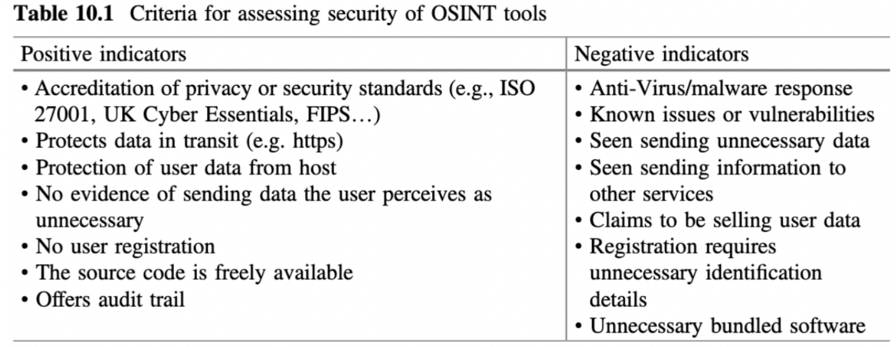

Problem Statement
Recently, the world witnessed a new technical revolution, the rise of AI. The capabilities of AI are enormous from context creation to person’s voice imitation. For a regular person to understand what is true and what is generated is not possible. Russian hackers influenced the US presidential election in 2016. They generated fake social accounts and spread fake news to change the reality. Today it is much, much more difficult to answer if something is fake or not. One of the steps in fighting fake news, disinformation is to check who is sharing the news or spreading it over the social network. OSINT is the way to go. The problem with it is - over the years it became outdated. The Intention of my research is to find out a way to gather information based on a person's social profile. Furthermore, Free OSINT and Online Research Resources help to find available tools. It showed 18 resources, none of them relevant to gathering information about a person. These tools are developed by different people with different intentions. Using them without checking creates a security risk and loss of trust. Using open source OSINT tools containing at least two problems. Claburn (2024) explains: “The majority of open source project maintainers are not being paid for their work, spend three times as much time on security than they did three years ago, and have become less trusting of contributors following the xz backdoor. Small wonder then that the maintainer population is aging – not enough newcomers want the undercompensated, unappreciated job.” The second problem as Revel (2016) suggests is

Proposed solution
Using LinkedIn and Facebook REST API we are going to gather information related to social footprint of the person of interest. This information is saved into a database for further analysis. Input: an user will provide the following: First Name, Last Name, Location, email and phone. Required parameters first name and last name. The rest are optional. A microservice gets this request and simultaneously sends requests to LinkedIn and Facebook. When user’s request finishes, notification will be sent by email.
There are two rest controllers, one related to the scraping data from LI and the second one, from FB. Gathered information saved into a database for further usage. In both cases, LI and FB are required to be registered in order to use their APIs, which do not fit our requirement to be in shadow. Thus, we will use search engine like DDG and web scrapping techniques.